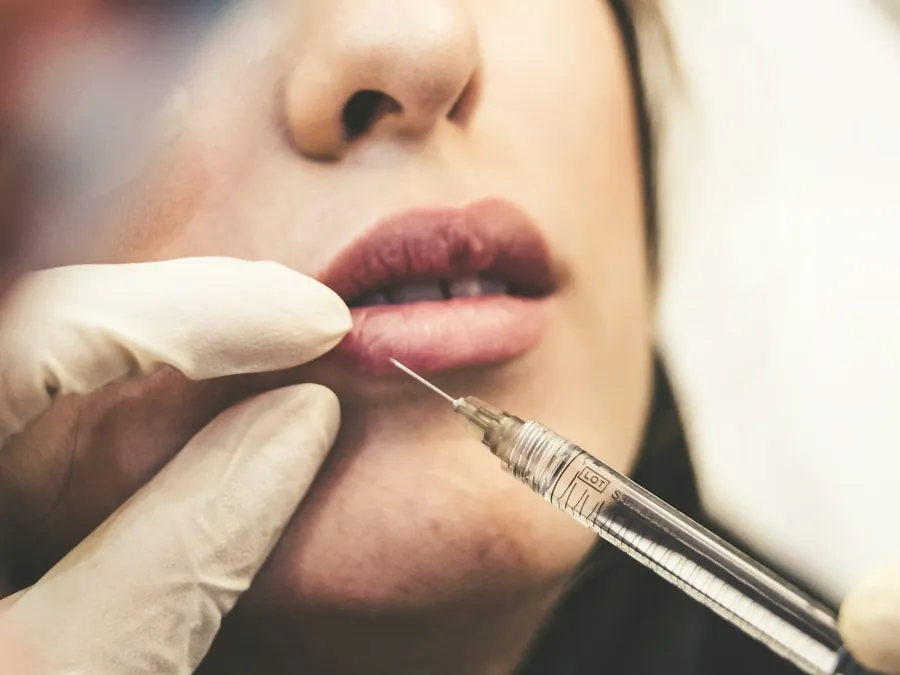

Follow-up and aftercare guide
Follow-up care after surgery in Colombia,
once you're back home
The surgery happened in Medellin. The follow-up doesn't stay there.
You're back home in Houston, or in Boston, suitcase still half-unpacked, and the question nobody fully answered in Medellin hits you: who checks on you now that the clinic is a flight away? Follow-up care after plastic surgery in Colombia doesn't end when you board the plane home. It changes shape. Here's what stays in-person, what moves to a screen, and where the line between the two actually sits.
Everything about the procedure itself (what it is, who it is for, recovery and risks) is on our Liposuction and liposculpture in Medellín page.
Follow-up care after surgery in Colombia: what stays in person
Before getting into remote follow-up, one thing doesn't change: the day you're cleared to fly is decided by your surgeon at an in-person follow-up visit in Medellin, not by the calendar you built from home weeks earlier. We cover this in detail in when can I fly after liposuction, but it's worth repeating here: that visit isn't a formality on your way out. It's the exam that actually decides whether you're ready for the flight.
That's also why the length-of-stay range we use at noon (1 to 2 weeks for face or breast procedures, 2 to 3 for body contouring or combined surgeries, as detailed in how long to stay in Colombia after plastic surgery) is a planning reference, not a fixed date. The in-person follow-ups in Medellin are what actually confirm it.
What continues by WhatsApp or video call once you're home
Once your surgeon has cleared you to fly and you're back home, noon stays in touch: by WhatsApp or video call, we check how your recovery is going and answer what's on your mind, so you don't have to wait weeks for a trip back to Medellin to ask something that's bothering you now.
It's real follow-up, not a formality. But that's exactly what it is, follow-up: the decision that actually mattered, whether everything's on track or something needs adjusting, already got made at the in-person visit you had before you traveled.
What remote follow-up doesn't do
We'd rather be honest here than sell you something that isn't true: a video call doesn't replace what a specialist can see and examine in person. If something genuinely isn't right, a video call isn't the channel for it. For any emergency, that means urgent care or the ER wherever you are, in Houston, in Boston, wherever, and telling us afterward. Not the other way around.
It's also not a channel for deciding from a distance whether you can fly earlier than planned, or for "approving" changes to a procedure remotely. All of that gets resolved in person, in Medellin, with your surgeon. We'd rather tell you that plainly now than have you count on a video call to do something it isn't built for.
A doctor you trust in your own city, just in case
That's why we recommend having someone you trust in your own city, even just as a backup: a doctor who can examine you in person between check-ins if it's ever needed. It's not a lack of confidence in remote follow-up, it's common sense when the clinic is hours away by plane.
One practical detail almost nobody asks about until they're booking a call: the time zone math shifts with the seasons. Miami, New York and Boston share Medellin's time in winter and run an hour ahead once those cities move their clocks forward for summer, since Colombia doesn't observe daylight saving. Houston works the other way: it matches Medellin in summer and falls an hour behind in winter. None of it is complicated, but it's worth confirming when you schedule, not assuming.
How to plan this part of the trip
Before you fly, confirm with your surgeon at your in-person visit what follow-up you'll need once you're in the US, and save our WhatsApp number for those calls. If you have someone you trust in your own city who could examine you in person if needed, tell them ahead of time rather than scrambling for one later. And if something comes up that can't wait, the local emergency room comes first, always.
Procedures in this guide
This guide is for information only and does not replace a medical consultation. Your specialist decides, in person, whether a procedure is right for you, your recovery time and when you can fly home. Every procedure carries risks and results vary from person to person.
Frequently asked questions
Frequently asked questions
What happens to my follow-up visits once I'm back in the US?
noon follows up remotely by WhatsApp or video call: we check on your recovery and answer your questions. That doesn't replace the in-person follow-up visits in Medellin that clear you to fly, and it isn't a substitute for an in-person medical evaluation if something feels off.
Can I just do all my follow-ups by video call and skip the in-person ones in Medellin?
No. Your surgeon needs to examine you in person in Medellin to decide you're cleared to fly. Remote follow-up starts after that, once you're back in the US, not before.
What should I do if something worries me about my recovery once I'm home?
If it's an emergency, go to urgent care or the ER wherever you are. Don't wait for the next video call. For non-urgent questions, message us and we'll follow up with you.
Do I need a doctor in my own city in addition to noon's follow-up?
It's worth having someone you trust nearby who can examine you in person between check-ins if you ever need it. Remote follow-up complements that local option, it doesn't replace it.
What time should I schedule a video call if I'm in Houston or Boston?
It depends on the season. Miami, New York and Boston share Medellin's time in winter and run an hour ahead in summer. Houston shares Medellin's time in summer and runs an hour behind in winter. Worth confirming the exact time when you book, not assuming it.
Guides
Keep reading.
 What the price of plastic surgery in Colombia depends onSurgery time, combined procedures, and what an honest quote should include, with no noon prices listed here.Read
What the price of plastic surgery in Colombia depends onSurgery time, combined procedures, and what an honest quote should include, with no noon prices listed here.Read
A summer plastic surgery trip to Colombia, without the surprisesSchool's out, you've got the time off work, and the trip to Colombia to see family is already taking shape. The question is whether that same trip has room for a procedure too.Read Liposuction in Medellín, Colombia, for US PatientsOne trip, one real decision: what can safely go together in the same surgery, and why that call belongs to your surgeon, not your calendar.Read
Liposuction in Medellín, Colombia, for US PatientsOne trip, one real decision: what can safely go together in the same surgery, and why that call belongs to your surgeon, not your calendar.ReadBy city
Flying in from your city.
noon Clinic
Let's plan your trip
Message us from the US and we'll set your consultation, procedure and follow-up dates with you.
We reply on WhatsApp within minutes during business hours. We answer your questions and book your in-person consultation; we never diagnose over WhatsApp. Why noon